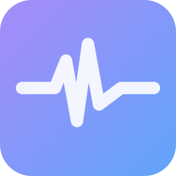

Pulse
공연·행사 현장 음원 재생 프로그램
할 수 있는 것
큐 재생목록에서 다음 곡을 미리 걸어 두고 차례로
페이드곡 끝을 부드럽게 줄이며 넘기기
레벨 자동 맞춤곡마다 다른 소리 크기를 맞춰서
비상 버튼문제가 생기면 한 번에 멈춤
이번 곡 뒤 멈춤지금 곡이 끝나면 자동으로 정지
광고 없음무료
윈도우에서 파란 경고가 뜨면
Pulse 는 개인이 만든 프로그램이라 아직 코드 서명이 없습니다. 윈도우가 「PC를 보호했습니다」를 띄우면 아래처럼 누르세요.
- 「추가 정보」를 누릅니다
- 「실행」을 누릅니다
맥에서 「확인되지 않은 개발자」가 뜨면
맥용도 아직 애플 서명이 없습니다. 처음 한 번만 아래처럼 열어 주세요.
- 받은 dmg 를 열고 Pulse 를 「응용 프로그램」 폴더로 끌어 놓습니다
- Pulse 를 한 번 실행합니다. 경고가 뜨면 「완료」를 누릅니다
- 「시스템 설정 → 개인정보 보호 및 보안」 아래쪽에서 「그래도 열기」를 누릅니다
- 다시 실행하고 「열기」를 누릅니다
「손상되었기 때문에 열 수 없습니다」가 뜨면 터미널에서 아래 한 줄을 실행한 뒤 다시 여세요.
xattr -dr com.apple.quarantine /Applications/Pulse.app애플 실리콘(M1·M2·M3·M4) 맥은 apple-silicon, 그 전 맥은 intel 파일을 받으세요.